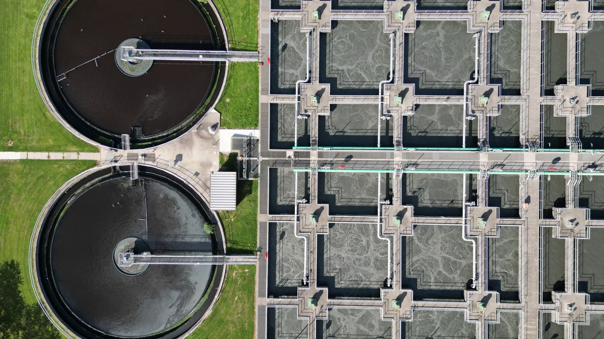
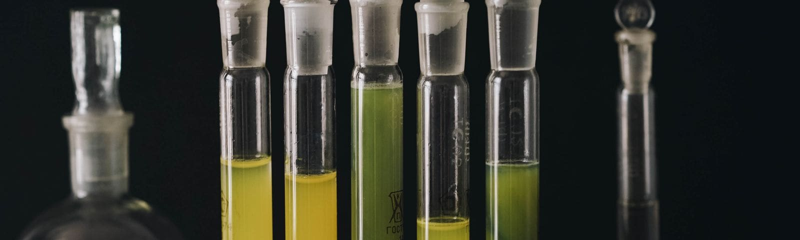

Tratamento de água industrial que você consegue medir
Quanto sua caldeira está corroendo agora? Se a resposta não é um número, não há tratamento — há entrega de produto. A Scherr fornece produtos químicos e assistência técnica com laboratório próprio, e mostra o resultado em medição.
O QUE MEDIMOS
O₂ dissolvido · pH · alcalinidade · condutividade · dureza · sílica ·
ciclos de concentração · contagem microbiológica · taxa de corrosão em corpo de prova

Onde a Scherr atua
Cada sistema tem seus próprios parâmetros de controle. Clique para ver o programa químico, os produtos aplicados e as dúvidas mais frequentes de cada um.
O que acompanha o produto
Fornecer produto químico é a parte fácil. O que sustenta o resultado é a rotina de medição em volta dele.
- Análises e monitoramento
- Análises de água e de depósito, contagem microbiológica e determinação das taxas de corrosão e deposição em corpos de prova de aço carbono, ligas de cobre e admiralty.
- Relatórios e inspeções
- Relatórios periódicos de avaliação do tratamento e inspeções com registros fotográficos e filmagens.
- Equipamentos em comodato
- Tanques de dosagem e de estocagem, bombas dosadoras, drenos e descargas automáticas.
- Laboratório na planta
- Montagem completa, com infraestrutura, aparelhagem e analista.
- Limpezas químicas
- Caldeiras, trocadores de calor, torres de resfriamento, fancoils, tubulações, bombas e tanques.
- Operação de estações de efluentes
- Monitoramento em nível operacional e químico, com transporte de produto e de pessoal técnico.
Mais de 30 anos cuidando da água da sua indústria
Sediada em Nova Lima, Minas Gerais, a Scherr atua desde 1993 com a visão da importância da água como recurso natural essencial. Somos referência em produtos químicos e serviços para o tratamento de águas industriais — caldeiras, torres de resfriamento, água gelada, desmineralizadores e efluentes.
O diferencial está na combinação entre produtos de qualidade comprovada, laboratório químico próprio para análises e uma equipe técnica qualificada. É o laboratório que permite responder com número, e não com opinião, se o tratamento está funcionando.

- EM OPERAÇÃO DESDE
- 1993
- SEDE
- Nova Lima, MG
- RECONHECIMENTO
- Prêmio Fornecedores Vale
- Categoria Meio Ambiente
- CERTIFICAÇÃO
- NSF
- ESTRUTURA
- Laboratório químico próprio
- Análises de água, depósito e microbiologia
Setores atendidos
Operações que dependem de água de processo estável, vapor confiável e efluente dentro do padrão.
- Plantas industriais
- Fábricas e operações que dependem de água de processo estável e de controle de corrosão.
- Sistemas térmicos
- Geradores de vapor e trocadores, onde depósito vira consumo de combustível.
- Tratamento e reuso
- Efluentes, resfriamento e recuperação de água com foco em performance.
Solicitar uma avaliação técnica
Descreva o sistema e o problema. Nossa equipe avalia e responde com a proposta de programa químico adequada.
- ENDEREÇO
- Av. Canadá, 283 — Nova Lima, MG
- TELEFONES
- +55 (31) 99224-7394 +55 (31) 99206-4484
- scherr@scherr.com.br
- HORÁRIO
- Segunda a sexta, 8h às 17h